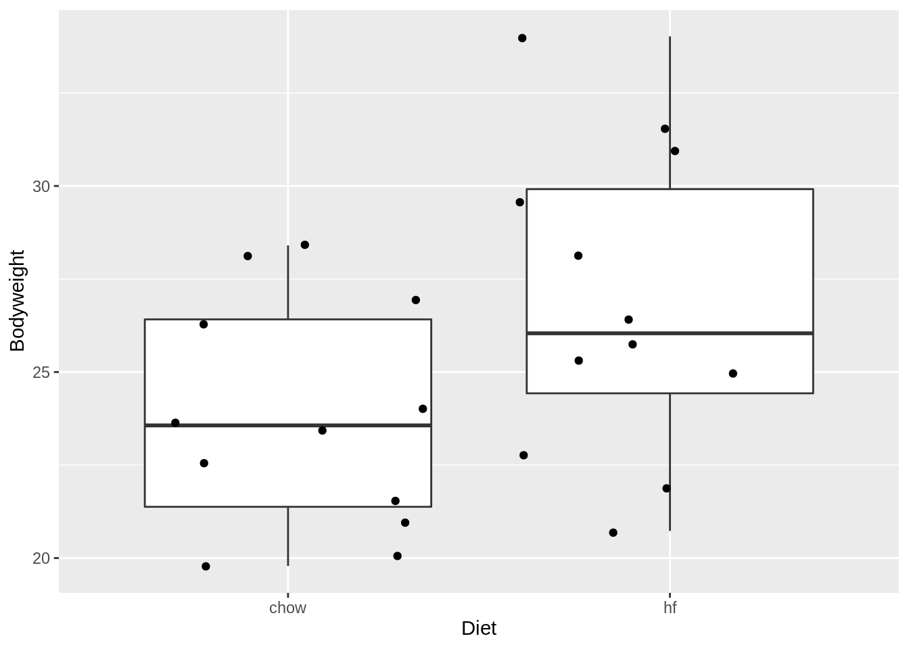
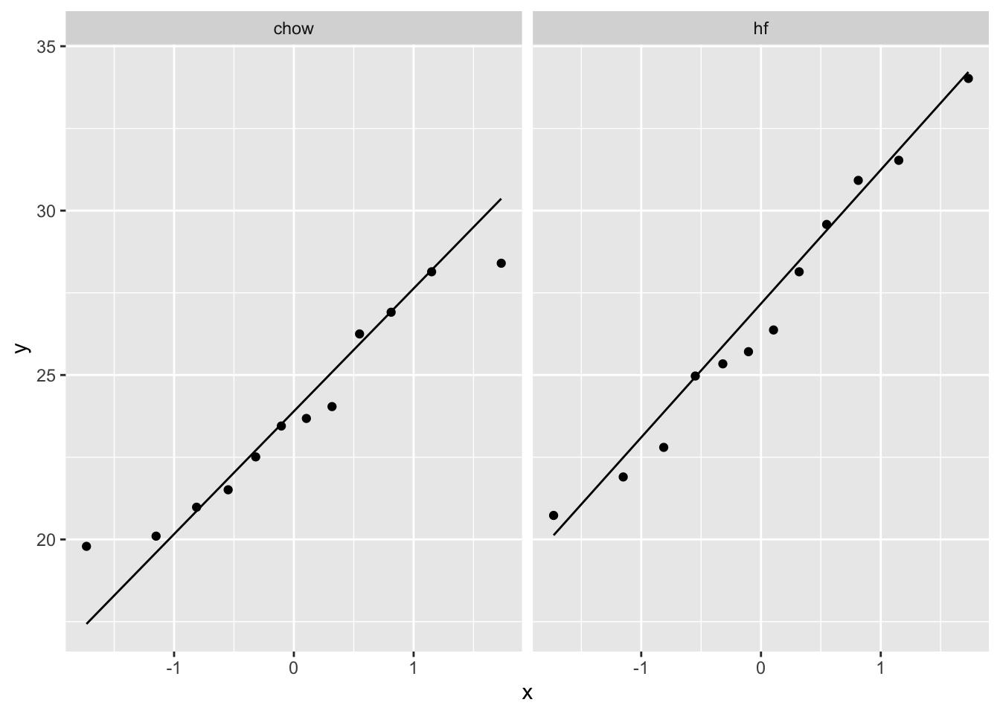
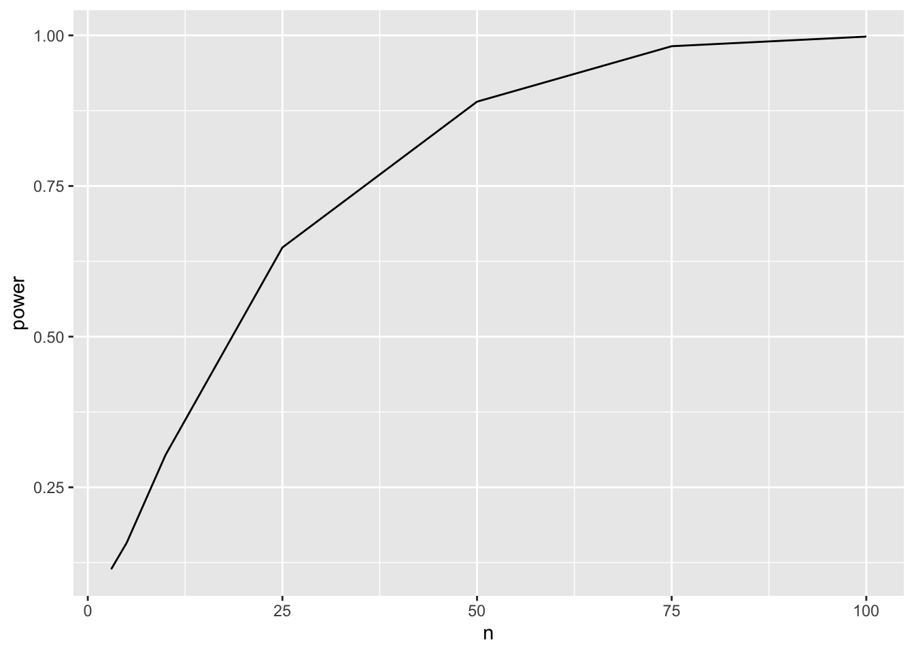
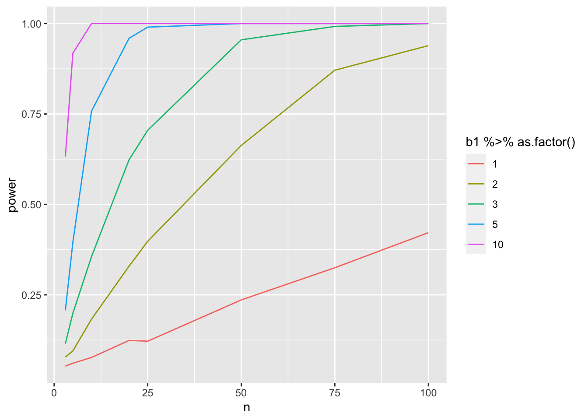
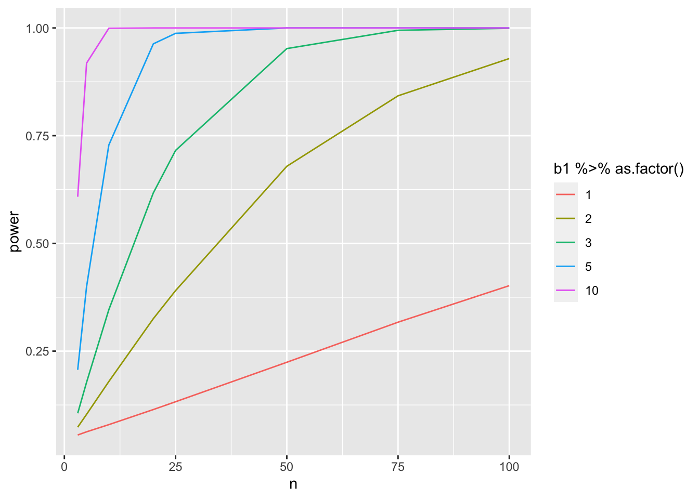
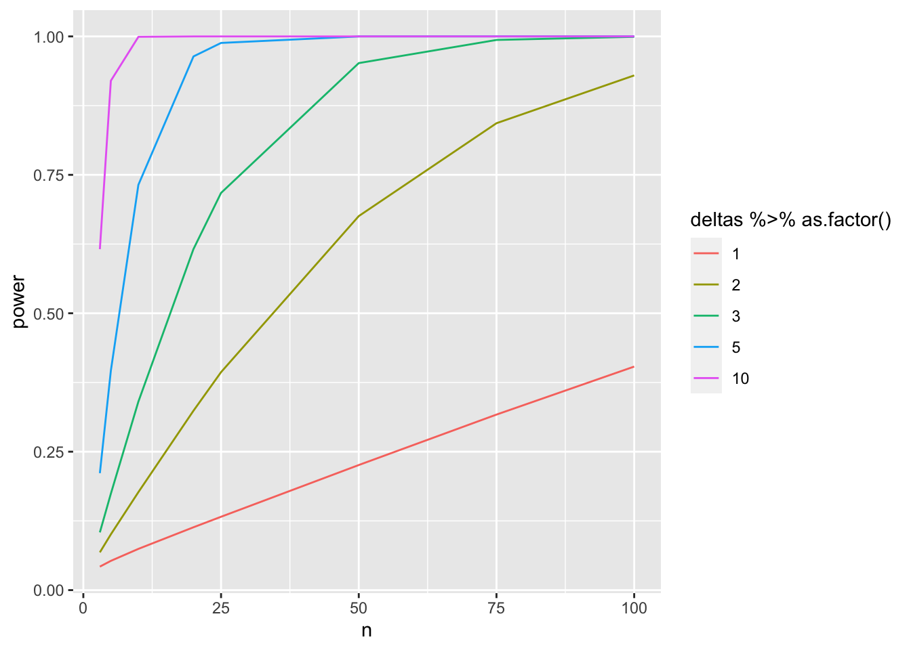

8.3 Experimental Design II: Replication and Power
Lieven Clement
statOmics, Ghent University (https://statomics.github.io)

library(tidyverse)## ── Attaching packages ───────────────────────────── tidyverse 1.3.1 ──## ✔ ggplot2 3.3.5 ✔ purrr 0.3.4
## ✔ tibble 3.1.6 ✔ dplyr 1.0.8
## ✔ tidyr 1.2.0 ✔ stringr 1.4.0
## ✔ readr 2.1.2 ✔ forcats 0.5.1## ── Conflicts ──────────────────────────────── tidyverse_conflicts() ──
## ✖ dplyr::filter() masks stats::filter()
## ✖ dplyr::lag() masks stats::lag()1 Concepts
- Experimental units representative for population: Randomisation
- Replication: technical vs biological, sample size - power
- Sources of variation: technical, biological, within subject, between subject
2 Replication
Two pager on Replication in nature methods: [PDF]
2.1 Example
Consider a single cell RNA-seq experiment where researchers want to assess the effect of drug treatment on gene expression
Potential research questions
- Is there a difference in average gene expression between treated and non treated samples
- Is there a difference in variability of gene expression between treated and non treated samples
2.2 Sources of variation
TABLE 1 NATURE METHODS | VOL.11 NO.9 | SEPTEMBER 2014 | 879 - 880
| Replicate type | Replicate category\(^\text{a}\) | |
|---|---|---|
| Colonies | B | |
| Strains | B | |
| Animal study subjects | Cohoused groups | B |
| Gender | B | |
| Individuals | B | |
| Organs from sacrificed animals | B | |
| Methods for dissociating cells from tissue | T | |
| Sample preparation | Dissociation runs from given tissue sample | T |
| Individual cells | B | |
| RNA-seq library construction | T | |
| Runs from the library of a given cell | T | |
| Sequencing | Reads from different transcript molecules | V\(^\text{b}\) |
| Reads with unique molecular identifier (UMI) from a given transcript molecule | T |
- Replicates are categorized as biological (B), technical (T) or of variable type (V).
- Sequence reads serve diverse purposes depending on the application and how reads are used in analysis.
2.3 At which level should we replicate?
- \(\text{var}(X)=\sigma^2_A+\sigma^2_C+\sigma^2_M=\sigma^2_{TOT}\)
- \(\text{var}(\bar{X})=\frac{\sigma^2_A}{n_A}+\frac{\sigma^2_C}{n_A n_C} + \frac{\sigma^2_M}{n_A n_C n_M}\)
 Figure 1 NATURE METHODS | VOL.11 NO.9 | SEPTEMBER 2014 | 879 - 880
Figure 1 NATURE METHODS | VOL.11 NO.9 | SEPTEMBER 2014 | 879 - 880
- Three levels of replication (two biological, one technical) with animal, cell and measurement replicates normally distributed with a mean across animals of 10 and ratio of variances 1:2:0.5. Solid green (biological) and blue (technical) dots show how a measurement of the expression (X = 12) samples from all three sources of variation. Distribution s.d. is shown as horizontal lines.
- Expression variance, Var(X), and variance of expression mean, Var(\(\bar X\)), computed across 10,000 simulations of nAnCnM = 48 measurements for unique combinations of the number of animals (nA = 1 to 48), cells per animal (nC = 1 to 48) and technical replicate measurements per cell (nM = 1 and 3). The ratio of Var(X) and Var(\(\bar X\)) is the effective sample size, n, which corresponds to the equivalent number of statistically independent measurements. Horizontal dashed lines correspond to biological and total variation. Error bars on Var(X) show s.d. from the 10,000 simulated samples (nM = 1).
- Cost benefit trade-off: cost difference between biological and technical replicates
- Typically, biological variability is substantially larger than technical variability
\(\rightarrow\) commit resources to sampling biologically relevant variables
\(\rightarrow\) unless measures of technical variability are of interest then increasing number of technical measurements is valuable.
Good experimental design practice includes planning for replication.
- Identify the research questions to be answered with experiments.
- Determine proportion of variability induced by each step.
- Be aware for pseudoreplication and aim for statistically independent replicates.
3 Power, sample size and other design aspects
Reading materials: Nature Methods (2013), 10(12), 1139–1140
3.1 Intermezzo linear regression in matrix form
- Linear regression is a very important statistical tool to study the association between variables and to build prediction models.
3.1.1 Scalar form
- Consider a vector of predictors \(\mathbf{x}=(x_1,\ldots,x_p)\) and
- a real-valued response \(Y\)
- then the linear regression model can be written as \[ Y=f(\mathbf{x}) +\epsilon=\beta_0+\sum\limits_{j=1}^p x_j\beta_j + \epsilon \] with i.i.d. \(\epsilon\sim N(0,\sigma^2)\)
3.1.2 Vector/Matrix form
- \(n\) observations \((\mathbf{x}_1,y_1) \ldots (\mathbf{x}_n,y_n)\) with \(\mathbf{x}_1^T=[1 x_1 \ldots x_p]\)
- Regression in matrix notation \[\mathbf{Y}=\mathbf{X\beta} + \mathbf{\epsilon}\] with \(\mathbf{Y}=\left[\begin{array}{c}y_1\\ \vdots\\y_n\end{array}\right]\), \(\mathbf{X}=\left[\begin{array}{cccc} 1&x_{11}&\ldots&x_{1p}\\ \vdots&\vdots&&\vdots\\ 1&x_{n1}&\ldots&x_{np} \end{array}\right]\) or \(\mathbf{X}=\left[\begin{array}{c} \mathbf{x}_1^T\\\vdots\\\mathbf{x}_n^T\end{array}\right]\), \(\boldsymbol{\beta}=\left[\begin{array}{c}\beta_0\\ \vdots\\ \beta_p\end{array}\right]\) and \(\mathbf{\epsilon}=\left[\begin{array}{c} \epsilon_1 \\ \vdots \\ \epsilon_n\end{array}\right]\)
3.2 Least Squares (LS)
Minimize the residual sum of squares \[\begin{eqnarray*} RSS(\boldsymbol{\beta})&=&\sum\limits_{i=1}^n e^2_i\\ &=&\sum\limits_{i=1}^n \left(y_i-\beta_0-\sum\limits_{j=1}^p x_{ij}\beta_j\right)^2 \end{eqnarray*}\]
or in matrix notation
\[ \text{RSS}(\boldsymbol{\beta})=(\mathbf{Y}-\mathbf{X\beta})^T(\mathbf{Y}-\mathbf{X\beta}) \]
\[\rightarrow \hat{\boldsymbol{\beta}}=\text{argmin}_\beta \text{ RSS}(\boldsymbol{\beta})\]
3.2.1 Minimize RSS
\[ \begin{array}{ccc} \frac{\partial RSS}{\partial \boldsymbol{\beta}}&=&\mathbf{0}\\\\ \frac{(\mathbf{Y}-\mathbf{X\beta})^T(\mathbf{Y}-\mathbf{X}\boldsymbol{\beta})}{\partial \boldsymbol{\beta}}&=&\mathbf{0}\\\\ -2\mathbf{X}^T(\mathbf{Y}-\mathbf{X}\boldsymbol{\beta})&=&\mathbf{0}\\\\ \mathbf{X}^T\mathbf{X\beta}&=&\mathbf{X}^T\mathbf{Y}\\\\ \hat{\boldsymbol{\beta}}&=&(\mathbf{X}^T\mathbf{X})^{-1}\mathbf{X}^T\mathbf{Y} \end{array} \]
3.3 Variance Estimator?
\[ \begin{array}{ccl} \hat{\boldsymbol{\Sigma}}_{\hat{\boldsymbol{\beta}}} &=&\text{var}\left[(\mathbf{X}^T\mathbf{X})^{-1}\mathbf{X}^T\mathbf{Y}\right]\\\\ &=&(\mathbf{X}^T\mathbf{X})^{-1}\mathbf{X}^T\text{var}\left[\mathbf{Y}\right]\mathbf{X}(\mathbf{X}^T\mathbf{X})^{-1}\\\\ &=&(\mathbf{X}^T\mathbf{X})^{-1}\mathbf{X}^T(\mathbf{I}\sigma^2)\mathbf{X}(\mathbf{X}^T\mathbf{X})^{-1} \\\\ &=&(\mathbf{X}^T\mathbf{X})^{-1}\mathbf{X}^T\mathbf{I}\quad\mathbf{X}(\mathbf{X}^T\mathbf{X})^{-1}\sigma^2\\\\ %\hat{\boldmath{\Sigma}}_{\hat{\boldsymbol{\beta}}}&=&(\mathbf{X}^T\mathbf{X})^{-1}\mathbf{X}^T \text{var}\left[\mathbf{Y}\right](\mathbf{X}^T\mathbf{X})^{-1}\mathbf{X}\\ &=&(\mathbf{X}^T\mathbf{X})^{-1}\mathbf{X}^T\mathbf{X}(\mathbf{X}^T\mathbf{X})^{-1}\sigma^2\\\\ &=&(\mathbf{X}^T\mathbf{X})^{-1}\sigma^2 \end{array} \]
The uncertainty on the model parameters thus depends on the residual variability and the design!
- The larger \(\mathbf{X}^T\mathbf{X}\) the more information the experiment contains on the model parameters and the smaller their variances and standard errors will be!
- Factorial designs?
- Designs with continuous predictors?
The effect size of interest is typically a linear combinations of the model parameters, i.e. \[ l_0 \times \beta_0 + l_1 \times \beta_1 + ... + l_{p-1} \times \beta_{p-1} = \mathbf{L}^T\boldsymbol{\beta} \]
The null hypothesis of our test statistics is than formulated as
\[ H_0: \mathbf{L}^T\boldsymbol{\beta} = 0 \]
vs the alternative hypothesis
\[ H_0: \mathbf{L}^T\boldsymbol{\beta} \neq 0 \] which can be assessed using a t-test statistic:
\[ t=\frac{\mathbf{L}^T\hat{\boldsymbol{\beta}} - 0}{\text{se}_{\mathbf{L}^T\hat{\boldsymbol{\beta}}}} \] which follows a t-distribution with n-p degrees of freedom under the null hypothesis when all assumptions for the linear model are valid.
So the power
\[P(p < 0.05 | H_1)\]
will typically depends on
- the real effect size in the population \(\mathbf{L}^T\boldsymbol{\beta}\).
- Number of observations: SE and df of t-test.
- Choice of the design points.
- Choice of significance level.
Similar to the introductory example, we can use simulations to assess the power.
3.4 Mouse example
In 2021 Choa et al. published that the cytokine Thymic stromal lymphopoietin (TSLP) induced fat loss through sebum secretion (talg). [html] [PDF]
Suppose that you would like to set up a similar study to test if cytokine interleukin 25 (IL) also has beneficial effect.
You plan to setup a study with a control group of high fat diet (HFD) fed mice and a treatment group that recieves the HFD and IL.
What sample size do you need to pick up the effect of the treatment.
3.4.1 How will we analyse the data of this experiment?
\(H_0\): The average weight difference is equal to zero
\(H-0\): The average weight difference is different from zero
Two sample t-test or a t-test on the slope of a linear model with one dummy variable.
\[ Y_i = \beta_0 + \beta_1 X_\text{iIL} + \epsilon_i\]
\[ \text{with } X_\text{iIL}=\begin{cases}X_{iIL}=0 & \text{HFD}\\X_{iIL}=1 & \text{HFD + IL}\end{cases}. \]
Estimated effect size \[\hat\delta = \bar X_{IL} - \bar X_{c} = \hat \beta_1\]
Test statistic \[ T = \frac{\bar{X}_{IL}-\bar{X}_{c}}{SD_\text{pooled} \times \sqrt{\frac{1}{n_1} + \frac{1}{n_2}}} = \frac{\hat\beta_1}{\text{SE}_{\hat\beta_1}} \]
\(\hat \beta_1\) is an unbiased estimator of the real weight difference (\(\delta\)) that would occur in the population of rats fed with HFD and rats fed with HFD + IL.
3.4.2 Power?
\[ P[p < \alpha \vert \beta_1 \neq 0] \]
- Hence, the power will depend on the real weight difference between the group means \(\beta_1\) in the population.
- The variability of the weight measurements
- The significance level \(\alpha\)
- Sample size \(n_{IL}\) and \(n_c\) in both groups
We can estimate the power if
- The assumptions of the model are met: weights are normally distributed with same variance
and we know
- the standard deviation of the weight measurements around their average mean for HFD-fed mice
- the real effect size in the population
- \(n_1\) and \(n_2\)
3.4.3 Use data from a previous experiment to get insight in mice data
Suppose that we have access to the data of a preliminary experiment (e.g. provided by Karen Svenson via Gary Churchill and Dan Gatti and partially funded by P50 GM070683 on PH525x)
mice <- read.csv("https://raw.githubusercontent.com/genomicsclass/dagdata/master/inst/extdata/femaleMiceWeights.csv")
mice %>%
ggplot(aes(x = Diet, y = Bodyweight)) +
geom_boxplot(outlier.shape = FALSE) +
geom_jitter()
mice %>%
ggplot(aes(sample = Bodyweight)) +
geom_qq() +
geom_qq_line() +
facet_wrap(~Diet)
mice <- mice %>% mutate(Diet = as.factor(Diet))
miceSum <- mice %>%
group_by(Diet) %>%
summarize(
mean = mean(Bodyweight, na.rm = TRUE),
sd = sd(Bodyweight, na.rm = TRUE),
n = n()
) %>%
mutate(se = sd / sqrt(n))
miceSumIn the experiment we have data from two diets:
- regular diet of cerial and grain based diet (Chow)
- High Fat (hf)
We can use the hf mice as input for our power analysis.
- The data of the hf mice seem to be normally distributed
- The mean weight is 26.8g
- The SD of the weight is 4.1g
Effect size?
The alternative hypothesis is complex.
It includes all possible effects!
In order to do the power analysis we will have to choose a minimum effect size that we would like to detect.
Suppose that we would like to detect if the weight of the rats difference \(\delta\) of at least 10%.
delta <- -round(miceSum$mean[2] * .1, 1)
delta## [1] -2.7Note, that the average weight then would get close to that of the rats in our pilot experiment that were fed on the chow diet.
We can set up a simulation study to assess the power of an experiment with 8 mice in each group:
3.4.3.1 One simulation
set.seed(1423)
n1 <- n2 <- 8
b0 <- round(miceSum$mean[2], 1)
b1 <- -delta
sd <- round(miceSum$sd[2], 1)
alpha <- 0.05
x <- rep(0:1, c(n1, n2))
y <- b0 + b1 * x + rnorm(n1 + n2, 0, sd = sd)
fit <- lm(y ~ x)
bhat <- fit$coef
stat <- summary(fit)
summary(fit)$coef[2, ]## Estimate Std. Error t value Pr(>|t|)
## 2.5972480 1.7919658 1.4493848 0.1692595For this simulated experiment we would not have been able to pick up the effect of the treatment at the significance level \(\alpha\)=0.05 (p = r round(summary(fit)$coef[2,“Pr(>|t|)”],2)`)!
- We have to repeat the experiment many times to estimate the power.
- We will therefore put our simulation in a general function.
3.4.3.2 Simulation of repeated experiments
library(multcomp)## Loading required package: mvtnorm## Loading required package: survival## Loading required package: TH.data## Loading required package: MASS##
## Attaching package: 'MASS'## The following object is masked from 'package:dplyr':
##
## select##
## Attaching package: 'TH.data'## The following object is masked from 'package:MASS':
##
## geysern1 <- n2 <- 8
b0 <- round(miceSum$mean[2], 1)
b1 <- -delta
sd <- round(miceSum$sd[2], 1)
predictorData <- data.frame(Diet = rep(c("c", "hf"), c(n1, n2)) %>% as.factor())
alpha <- 0.05
simLm <- function(form, data, betas, sd, contrasts, simIndex = NA) {
dataSim <- data
X <- model.matrix(form, dataSim)
dataSim$ySim <- X %*% betas + rnorm(nrow(dataSim), 0, sd)
form <- formula(paste("ySim ~", form[[2]]))
fitSim <- lm(form, dataSim)
mcp <- glht(fitSim, linfct = contrasts)
return(summary(mcp)$test[c("coefficients", "sigma", "tstat", "pvalues")] %>% unlist())
}
simLm(
form = ~Diet,
data = predictorData,
betas = c(b0, b1),
sd = sd,
contrasts = "Diethf = 0"
)## coefficients.Diethf sigma.Diethf tstat.Diethf
## 1.9444623 2.0931302 0.9289734
## pvalues
## 0.3686439We now have a generic function that can simulate data from a normal distribution for every design. The function has arguments:
form: One sided formula including the structure of the predictors in the modeldata: Data frame with the predictor values for the designbetas: A vector with values for all mean model parameterssd: The standard deviation of the errorcontrasts: a scalar or a vector with the null hypotheses that we would like to assess.simIndex: an arbitrary argument that is not used by the function but that will allow it to be used in an sapply loop that runs from 1 up to the number of simulations.
Simulate nSim = 1000 repeated experiments:
set.seed(1425)
nSim <- 1000
simResults <- t(sapply(1:nSim, simLm, form = ~Diet, data = predictorData, betas = c(b0, b1), sd = sd, contrasts = "Diethf = 0"))
power <- mean(simResults[, 4] < alpha)
power## [1] 0.221We have a power of 22.1% to pick up the treatment effect when using 8 bioreps in each treatment group.
3.4.3.3 Power for multiple sample sizes
We can now calculate the power for multiple sample sizes.
power <- data.frame(n = c(3, 5, 10, 25, 50, 75, 100), power = NA)
for (i in 1:nrow(power))
{
n1 <- n2 <- power$n[i]
predictorData <- data.frame(Diet = rep(c("c", "hf"), c(n1, n2)) %>% as.factor())
simResults <- t(sapply(1:nSim, simLm, form = ~Diet, data = predictorData, betas = c(b0, b1), sd = sd, contrasts = "Diethf = 0"))
power$power[i] <- mean(simResults[, "pvalues"] < alpha)
}
powerpower %>%
ggplot(aes(x = n, y = power)) +
geom_line()
3.4.3.4 Assess power in function of sample size for different effect sizes
Note, that - the sign of the delta is arbitrary because we test two-sided. - the intercept is arbitrary because we only asses \(\beta_0\) - We therefore typically set \(\beta_0 = 0\)
nSim <- 1000
b0 <- 0
deltas <- c(1, 2, 3, 5, 10)
sd <- round(miceSum$sd[2], 1)
ns <- c(3, 5, 10, 20, 25, 50, 75, 100)
power <- data.frame(
b1 = rep(deltas, each = length(ns)),
n = rep(ns, length(deltas)),
power = NA
)
for (i in 1:nrow(power))
{
b1 <- power$b1[i]
n1 <- n2 <- power$n[i]
predictorData <- data.frame(Diet = rep(c("c", "hf"), c(n1, n2)) %>% as.factor())
simResults <- t(sapply(1:nSim, simLm, form = ~Diet, data = predictorData, betas = c(b0, b1), sd = sd, contrasts = "Diethf = 0"))
power$power[i] <- mean(simResults[, "pvalues"] < alpha)
}power %>%
ggplot(aes(x = n, y = power, col = b1 %>% as.factor())) +
geom_line()
Note, that the power curves are still a bit choppy because we selected a limited number of sample sizes and because nSim simulations is not enough to get a good power estimate when the power is low.
4 Final remarks
The code can be easily extended towards other designs by altering
- predictor data
- formula
- contrast
The simulations start to take long when you evaluate many scenario’s.
- More efficient code using matrices
- For a two group comparison closed form solutions exist
4.1 More efficient code based on matrix algebra
Code runs much faster. We now simulate 20 times more experiments in a much shorter time!
simFast <- function(form, data, betas, sd, contrasts, alpha = .05, nSim = 10000) {
ySim <- rnorm(nrow(data) * nSim, sd = sd)
dim(ySim) <- c(nrow(data), nSim)
design <- model.matrix(form, data)
ySim <- ySim + c(design %*% betas)
ySim <- t(ySim)
### Fitting
fitAll <- limma::lmFit(ySim, design)
### Inference
varUnscaled <- c(t(contrasts) %*% fitAll$cov.coefficients %*% contrasts)
contrasts <- fitAll$coefficients %*% contrasts
seContrasts <- varUnscaled^.5 * fitAll$sigma
tstats <- contrasts / seContrasts
pvals <- pt(abs(tstats), fitAll$df.residual, lower.tail = FALSE) * 2
return(mean(pvals < alpha))
}nSim <- 20000
b0 <- 0
sd <- round(miceSum$sd[2], 1)
ns <- c(3, 5, 10, 20, 25, 50, 75, 100)
deltas <- c(1, 2, 3, 5, 10)
contrast <- limma::makeContrasts("Diethf", levels = c("(Intercept)", "Diethf"))## Warning in limma::makeContrasts("Diethf", levels = c("(Intercept)",
## "Diethf")): Renaming (Intercept) to InterceptpowerFast <- matrix(NA, nrow = length(ns) * length(deltas), ncol = 3) %>% as.data.frame()
names(powerFast) <- c("b1", "n", "power")
form <- ~Diet
i <- 0
for (n in ns)
{
n1 <- n2 <- n
### Simulation
predictorData <- data.frame(Diet = rep(c("c", "hf"), c(n1, n2)) %>% as.factor())
for (b1 in deltas)
{
i <- i + 1
betas <- c(b0, b1)
powerFast[i, ] <- c(b1, n, simFast(form, predictorData, betas, sd, contrasts = contrast, alpha = alpha, nSim = nSim))
}
}powerFast %>%
ggplot(aes(x = n, y = power, col = b1 %>% as.factor())) +
geom_line()
4.2 More efficient code based on closed form solution that exists for two group comparison
For the two sample t-test a closed form estimate exists for the power. In this context the Cohen’s effect size is typically used:
\(D = \frac{\delta}{SD}\)
power.t.test(n = 8, delta = delta, sd = sd, type = "two.sample")##
## Two-sample t test power calculation
##
## n = 8
## delta = 2.7
## sd = 4.1
## sig.level = 0.05
## power = 0.2320512
## alternative = two.sided
##
## NOTE: n is number in *each* groupNote, that this is very similar to the power that we calculated using the simulations!
b0 <- 0
sd <- round(miceSum$sd[2], 1)
ns <- c(3, 5, 10, 20, 25, 50, 75, 100)
deltas <- c(1, 2, 3, 5, 10)
powerTheo <- data.frame(
deltas = rep(deltas, each = length(ns)),
n = rep(ns, length(deltas)),
power = NA
)
powerTheo$power <- apply(powerTheo[, 1:2], 1, function(x) power.t.test(delta = x[1], n = x[2], sd = sd, type = "two.sample")$power)powerTheo %>%
ggplot(aes(x = n, y = power, col = deltas %>% as.factor())) +
geom_line()